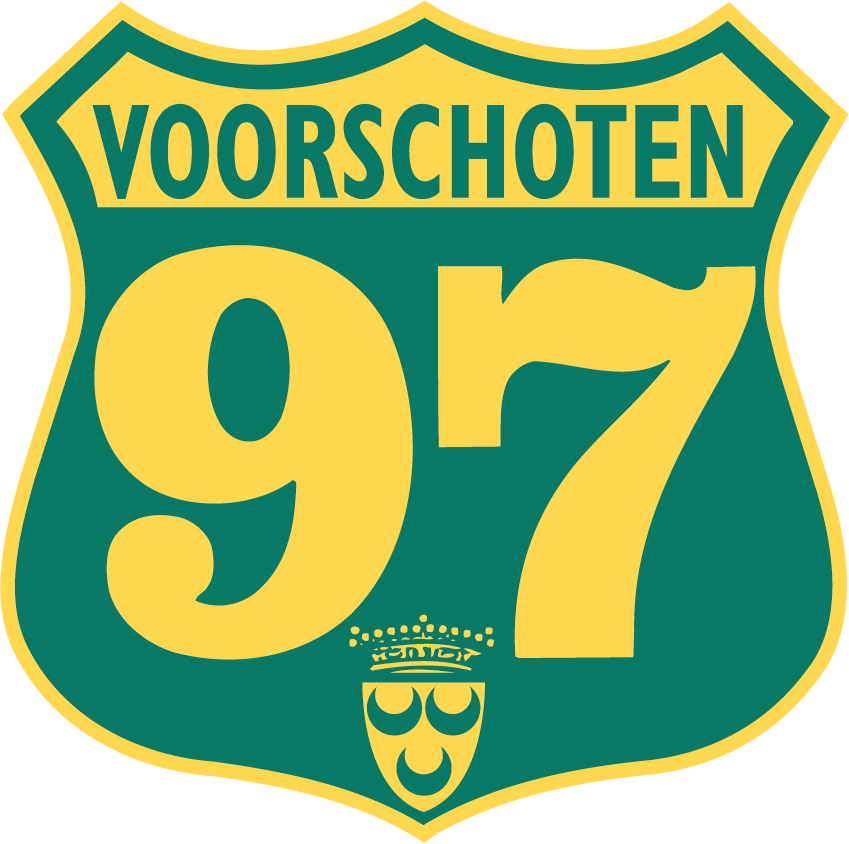

SCROLL NAAR BENEDEN VOOR MEER INFORMATIE OVER MIJ!
Hoi, ik ben Ibrahim Sakr en ik ben 16 jaar oud. Ik ben geboren in Egypte, in de stad Beheira, op 17 maart 2009.
Toen ik 5 jaar oud was, ben ik in Nederland komen wonen.
Daardoor heb ik ook de eerste paar jaar van mijn leven in Egypte op school gezeten.
Mijn favoriete serie is Power, omdat er eigenlijk alles in zit: plot twists, actie en gewoon alles wat een serie zou moeten hebben.
En daarnaast hoop ik een eigen bedrijf te hebben, of iets te doen met online geld verdienen.
Ik ga bijna elke zomer naar Egypte om familie te bezoeken, en het is daar elk jaar heel erg warm. Een fun fact over mij is dat ik ook goed kan koken.
School
Ik zit op het Vlietland College wat ook wel het VLC word genoemd.
Ik heb het vakken pakket E&M gekozen en mijn favorieten vakken zijn
informatica en Frans.
Mijn vakkenpakket
Economie
Engels
Frans
Geschiedenis
Informatica
LEF
Maatschappijleer
Nederlands
Wiskunde A
Bewegen & Sport
Hobby
Ik ben een fanatieke voetballer die altijd wil winnen.
Als ik een keer verlies, ben ik de rest van de dag niet echt in de mood. Ik hou van voetbal en speel bij Voorschoten ’97 in de JO17-1.
Mijn positie is links- of rechtsbuiten, en ik ben zelf ook links. Later hoop ik op een hoog niveau te voetballen

Hier links zie je een foto van mij met een trofee die ik met een academy heb gewonnen in het Kras Stadion, dat
is de stadion waar de profclub FC Volendam speelt. Hier boven zie je de vlag van Egypte
(De land waar ik vandaan kom) en hieronder de logo van mijn huidige voetbalclub.